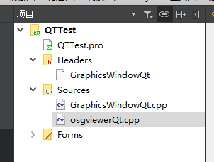
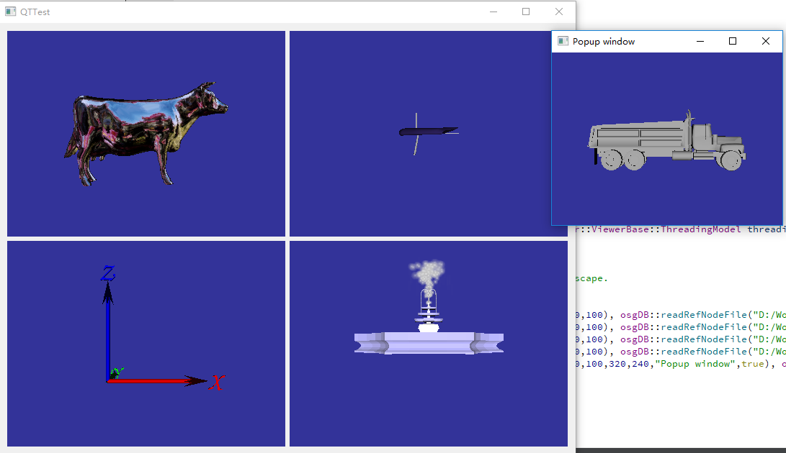

不得不说关于OSG的资料实在太零散了，搜索了很多关于OSG在QT下的解决方案，都是各有各的说法，有的说的不是很清楚，有的已经过时了。这里提供一下自己的解决方案吧。
在远古的OSG里面，应该是提供对QT的支持的；不过应该是由于QT版本变动比较大，现在的OSG版本应该已经没有了。但是在GitHub上又有了新的osgQt项目（地址：https://github.com/openscenegraph/osgQt） 用来解决这个问题。
osgQt是个简单的小项目，其实没有必要额外的编译，最核心的是个名为GraphicsWindowQt的类，只需要复制GraphicsWindowQt.h和GraphicsWindowQt.cpp到QT工程里面就可以使用了。同时osgQt给出了一个名为osgviewerQt的样例，也仅仅只是个cpp文件。结合两者，一个简单的示例就出来了。
QT工程如下：

编译运行后如下：

上述项目直接运行，会出现诸如“QOpenGLContext::swapBuffers() called with non-exposed window, behavior is undefined”的警告。查阅网上的英文资料，大意说是因为OpenGL环境未初始化产生的。在osgviewerQt中绑定了一个定时器，每隔10ms就调用frame()来绘制一帧，而这个定时器是在构造函数的时候就开始调用了，没有等待QT中OpenGL环境的生成。在这里我把定时器的部分给改进了一下，等待OSG的环境初始化完成在启动定时器，这个警告就没有了。osgviewerQt改进后的代码如下：
#include <QTimer>
#include <QApplication>
#include <QGridLayout>
#include <osgViewer/CompositeViewer>
#include <osgViewer/ViewerEventHandlers>
#include <osgGA/MultiTouchTrackballManipulator>
#include <osgDB/ReadFile>
#include "GraphicsWindowQt"
#include <iostream>
class ViewerWidget : public QWidget, public osgViewer::CompositeViewer
{
public:
ViewerWidget(QWidget* parent = 0, Qt::WindowFlags f = 0, osgViewer::ViewerBase::ThreadingModel threadingModel=osgViewer::CompositeViewer::SingleThreaded) : QWidget(parent, f)
{
setThreadingModel(threadingModel);
// disable the default setting of viewer.done() by pressing Escape.
setKeyEventSetsDone(0);
QWidget* widget1 = addViewWidget( createGraphicsWindow(0,0,100,100), osgDB::readRefNodeFile("D:/Work/OSGBuild/OpenSceneGraph-Data/cow.osgt") );
QWidget* widget2 = addViewWidget( createGraphicsWindow(0,0,100,100), osgDB::readRefNodeFile("D:/Work/OSGBuild/OpenSceneGraph-Data/glider.osgt") );
QWidget* widget3 = addViewWidget( createGraphicsWindow(0,0,100,100), osgDB::readRefNodeFile("D:/Work/OSGBuild/OpenSceneGraph-Data/axes.osgt") );
QWidget* widget4 = addViewWidget( createGraphicsWindow(0,0,100,100), osgDB::readRefNodeFile("D:/Work/OSGBuild/OpenSceneGraph-Data/fountain.osgt") );
// QWidget* popupWidget = addViewWidget( createGraphicsWindow(900,100,320,240,"Popup window",true), osgDB::readRefNodeFile("D:/Work/OSGBuild/OpenSceneGraph-Data/dumptruck.osgt") );
// popupWidget->show();
QGridLayout* grid = new QGridLayout;
grid->addWidget( widget1, 0, 0 );
grid->addWidget( widget2, 0, 1 );
grid->addWidget( widget3, 1, 0 );
grid->addWidget( widget4, 1, 1 );
setLayout( grid );
//connect( &_timer, SIGNAL(timeout()), this, SLOT(update()) );
//_timer.start( 10 );
}
QWidget* addViewWidget( osgQt::GraphicsWindowQt* gw, osg::ref_ptr<osg::Node> scene )
{
osgViewer::View* view = new osgViewer::View;
addView( view );
osg::Camera* camera = view->getCamera();
camera->setGraphicsContext( gw );
const osg::GraphicsContext::Traits* traits = gw->getTraits();
camera->setClearColor( osg::Vec4(0.2, 0.2, 0.6, 1.0) );
camera->setViewport( new osg::Viewport(0, 0, traits->width, traits->height) );
// set the draw and read buffers up for a double buffered window with rendering going to back buffer
camera->setDrawBuffer(GL_BACK);
camera->setReadBuffer(GL_BACK);
camera->setProjectionMatrixAsPerspective(30.0f, static_cast<double>(traits->width)/static_cast<double>(traits->height), 1.0f, 10000.0f );
view->setSceneData( scene );
view->addEventHandler( new osgViewer::StatsHandler );
view->setCameraManipulator( new osgGA::MultiTouchTrackballManipulator );
gw->setTouchEventsEnabled( true );
return gw->getGLWidget();
}
osgQt::GraphicsWindowQt* createGraphicsWindow( int x, int y, int w, int h, const std::string& name="", bool windowDecoration=false )
{
osg::DisplaySettings* ds = osg::DisplaySettings::instance().get();
osg::ref_ptr<osg::GraphicsContext::Traits> traits = new osg::GraphicsContext::Traits;
traits->windowName = name;
traits->windowDecoration = windowDecoration;
traits->x = x;
traits->y = y;
traits->width = w;
traits->height = h;
traits->doubleBuffer = true;
traits->alpha = ds->getMinimumNumAlphaBits();
traits->stencil = ds->getMinimumNumStencilBits();
traits->sampleBuffers = ds->getMultiSamples();
traits->samples = ds->getNumMultiSamples();
return new osgQt::GraphicsWindowQt(traits.get());
}
// virtual void paintEvent( QPaintEvent* /*event*/ )
// { frame(); }
//定时器事件
void timerEvent(QTimerEvent* )
{
frame();
}
//启动定时器绘制
void show()
{
QWidget::show();
_timerID = startTimer(10);
}
protected:
//QTimer _timer;
int _timerID; //定时器ID
};
int main( int argc, char** argv )
{
osg::ArgumentParser arguments(&argc, argv);
#if QT_VERSION >= 0x050000
// Qt5 is currently crashing and reporting "Cannot make QOpenGLContext current in a different thread" when the viewer is run multi-threaded, this is regression from Qt4
osgViewer::ViewerBase::ThreadingModel threadingModel = osgViewer::ViewerBase::SingleThreaded;
#else
osgViewer::ViewerBase::ThreadingModel threadingModel = osgViewer::ViewerBase::CullDrawThreadPerContext;
#endif
while (arguments.read("--SingleThreaded")) threadingModel = osgViewer::ViewerBase::SingleThreaded;
while (arguments.read("--CullDrawThreadPerContext")) threadingModel = osgViewer::ViewerBase::CullDrawThreadPerContext;
while (arguments.read("--DrawThreadPerContext")) threadingModel = osgViewer::ViewerBase::DrawThreadPerContext;
while (arguments.read("--CullThreadPerCameraDrawThreadPerContext")) threadingModel = osgViewer::ViewerBase::CullThreadPerCameraDrawThreadPerContext;
#if QT_VERSION >= 0x040800
// Required for multithreaded QGLWidget on Linux/X11, see http://blog.qt.io/blog/2011/06/03/threaded-opengl-in-4-8/
if (threadingModel != osgViewer::ViewerBase::SingleThreaded)
QApplication::setAttribute(Qt::AA_X11InitThreads);
#endif
QApplication app(argc, argv);
ViewerWidget* viewWidget = new ViewerWidget(0, Qt::Widget, threadingModel);
viewWidget->setGeometry( 100, 100, 800, 600 );
viewWidget->show();
return app.exec();
}在OSG中提供了诸如CullDrawThreadPerContext等多线程模式，但是在这里是没办法支持这些多线程模式的，只能支持单线程。在网上查阅了一些解决方案，但是最后都不是很完美，有空再把其解决方案写出来。
GraphicsWindowQt最终继承的还是QT中的QGLWidget类，提供OpenGL功能。而在新版本的QT中，这个类已经被废弃了，取而代之的是一个叫做QOpenGLWidget的类。所以这里面问题还是不少的，好在内容相对较少，以后有空可以自己改进。